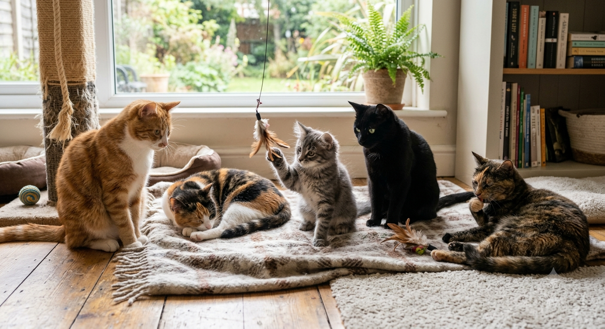

Personalidade dos gatos
Cada gato tem seu próprio jeito de ser. Alguns são mais brincalhões e sociáveis, outros preferem observar tudo de longe antes de interagir. Essa diversidade de comportamento está ligada tanto à genética quanto à forma como foram socializados quando filhotes. Uma coisa é certa: gatos gostam de controle do ambiente. Eles observam, analisam e escolhem quando interagir.
Gatos em casa: como criar um ambiente ideal
Para manter um gato feliz e saudável dentro de casa, alguns pontos são essenciais: Espaços altos (prateleiras, arranhadores verticais) Caixa de areia sempre limpa Água fresca disponível em vários pontos Brinquedos para estimular caça e movimento Gatos adoram explorar e precisam de estímulos diários para evitar tédio e estresse.
Alimentação felina
A alimentação dos gatos deve ser rica em proteínas e adequada à idade e necessidades do animal. Rações de qualidade são fundamentais, e alimentos humanos devem ser evitados, especialmente chocolate, cebola e alho, que são tóxicos para eles. Em caso de dúvidas, sempre vale consultar um veterinário.
Comportamentos curiosos
Se você já viu um gato “amassando pãozinho”, derrubando objetos da mesa ou correndo do nada pela casa, isso tem explicação: “Amassar pãozinho”: comportamento de conforto herdado da infância Derrubar objetos: curiosidade e instinto de caça Corridas repentinas: liberação de energia acumulada